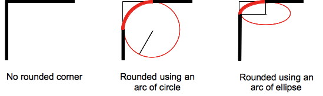

Nuevas Propiedades
Ideas Principales.
- En un intento por reducir el uso de codigo Javascript
- Solo cubre diseño y estilo web sino tambien forma y movimiento.
Apuntes de Clase.
Propiedad Border- radius
se utiliza para redondear las esquinas de los bordes de un elemento HTML, como un div, una imagen o un botón. Esta propiedad permite que un elemento tenga esquinas curvas en lugar de esquinas rectas.
Font- face
se utiliza para definir y cargar fuentes personalizadas que pueden ser usadas en una página web, independientemente de si están instaladas en el dispositivo del usuario. Esto permite que los diseñadores web utilicen tipografías que no forman parte de las fuentes predefinidas de los navegadores.
